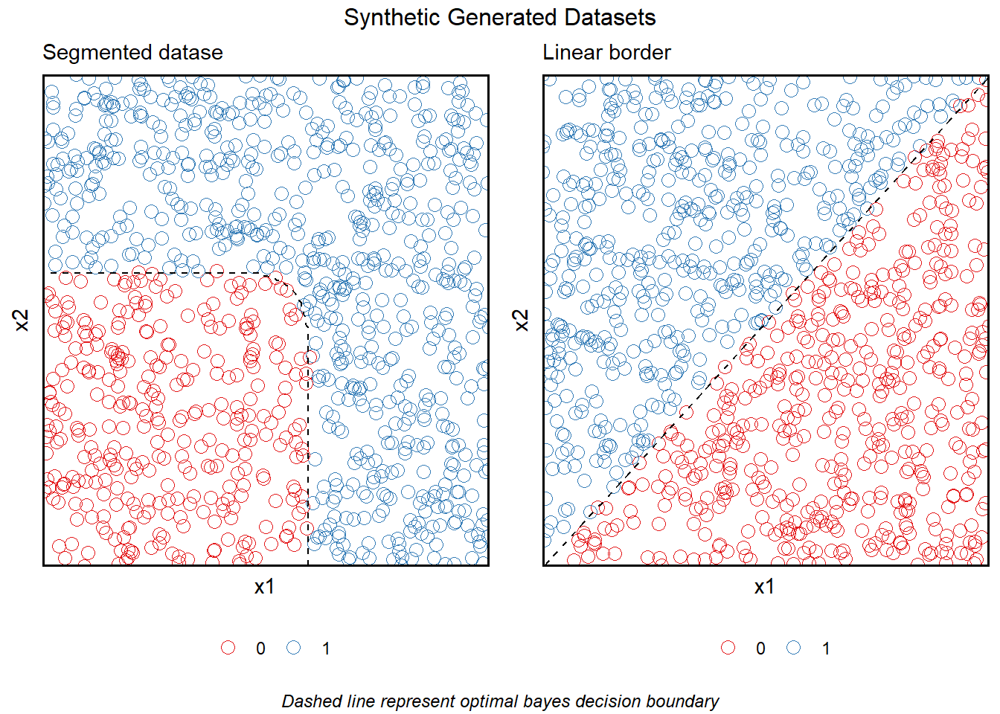

Similarly to Logistic regression, Linear Discriminant Analysis (LDA) estimates each class by modeling the conditional distribution \(Pr(G = 1 | X)\), but using a different approach. While linear regression uses the Logitisc function for this purpose, LDA assumes each observation is drawan from a multivariated normal distribution with similar covariance and uses this distribution to model the conditional distribution. Therefore, on many ocasions, the output of both Logistic and LDA will be quite similar. Hastie, Tibshirani, and Friedman (2009) in their experience, this models give very similar results.
Tree based methods take a very different approach to the problem. They involve stratiying or segmenting the predictor space into a number of simple regions.(see James et al. (2013) pag-303). A metric like the mean or median is then used as predictor for each region or cut.
This oposing technics have pronounced characteristics making then appropriate to dataset with specific characteristics. Whenever the classes are based on very pronounced cuts or classes, tree based approaches and their rule based classification will tend to fit best. On the other hand, on its simple form as decision tree, they tend to perform worse then tradional parametric conterparts as LDA when the classification border follows a clear distribution.
Therefore, we defined the comparing datasets as follows:
James et al. (2013) In a p-dimensional space, a hyperplane is a flat affline subspace of dimension p-1. For instance, in two dimensions, a hyperplane is a flat one-dimensional subspace-in other words, a line. In two dimensions the hyperplane is defined as
\[\beta_{0} + \beta_{1}X_{1} + \beta_{2}X_{2} = 0\]
decision_fun_linear <- function(x1, x2){
res <- ifelse(x2 >= x1, 1, 0)
return(res)
}
dataset_linear <- dataset_gen_unif(class_fun = decision_fun_linear, size = 1000)
decision_fun_normal <- function(x1, x2){
mu <- c(6,6)
cvar <- matrix(c(0.5,0,0,0.5), 2, 2)
p <- mvtnorm::pmvnorm(c(x1,x2), mean = mu, sigma = cvar)
res <- ifelse(p[1] <= 0.5, 1, 0)
return(res)
}
dataset_dtree <- dataset_gen_unif(class_fun = decision_fun_normal)
grid.arrange(
dataset_dtree$border_plot + labs(subtitle = "Segmented datase", color = ""),
dataset_linear$border_plot + labs(subtitle = "Linear border", color = ""),
nrow = 1,
top = "Synthetic Generated Datasets",
bottom = grid::textGrob(
"Dashed line represent optimal bayes decision boundary",
gp = grid::gpar(fontface = 3, fontsize = 9)
)
)